Code First的使用方式與列出多個用於Code First的Metadata
一、Code First的使用方式
準備測試範例，於Models資料夾按右鍵新增，
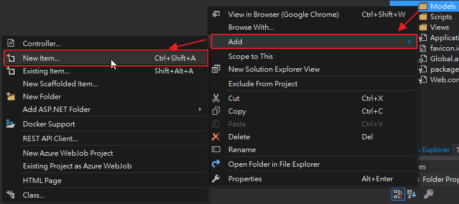
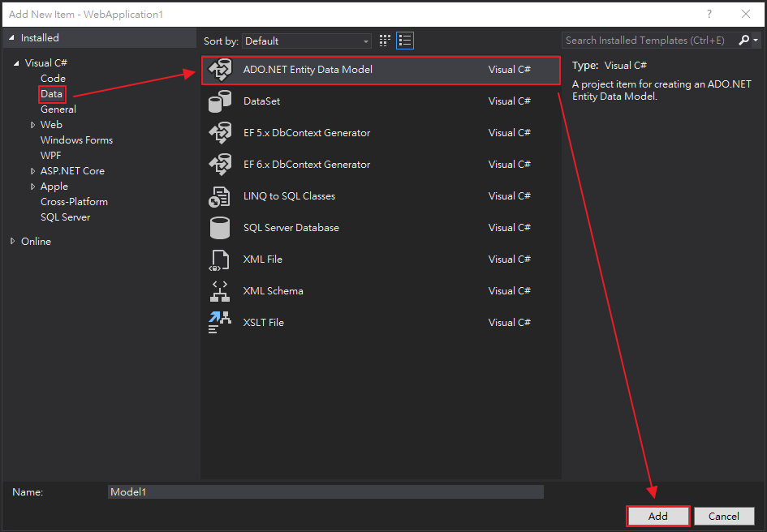
新增空的Code First model
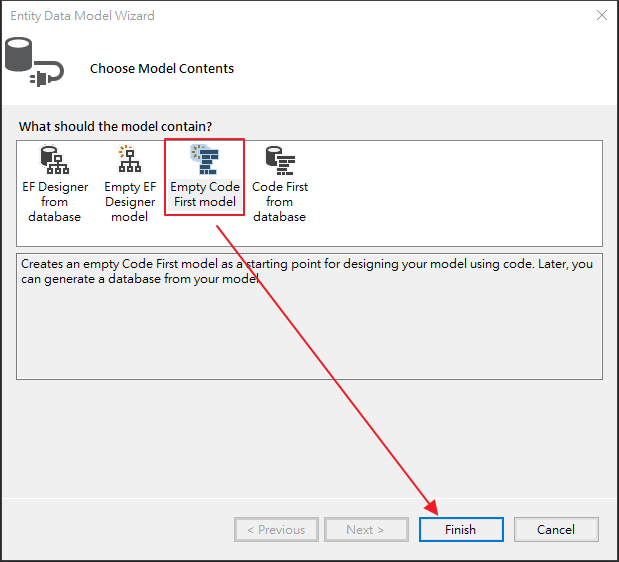
完成後的內容如下
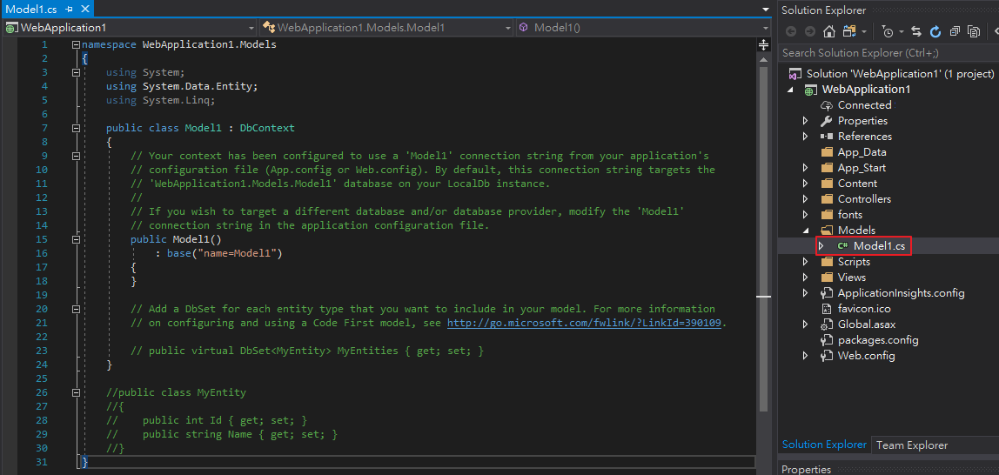
然後再新增所謂的「POCO(Plain Old CLR Object)類別」，
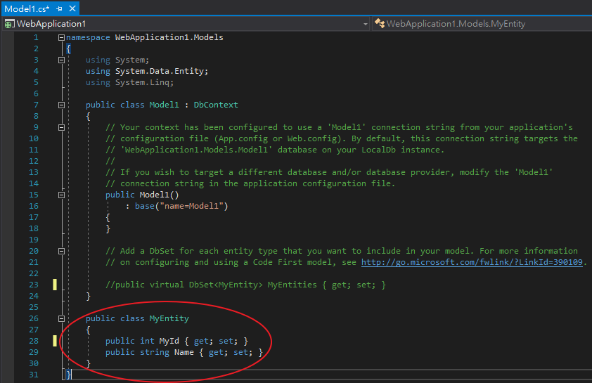
於class Model1添加
public virtual DbSet<MyEntity> MyEntities { get; set; }
表示class Model1將會間接操作MyEntity資料表，也表示class Model1與MyEntity資料表的連結關係。
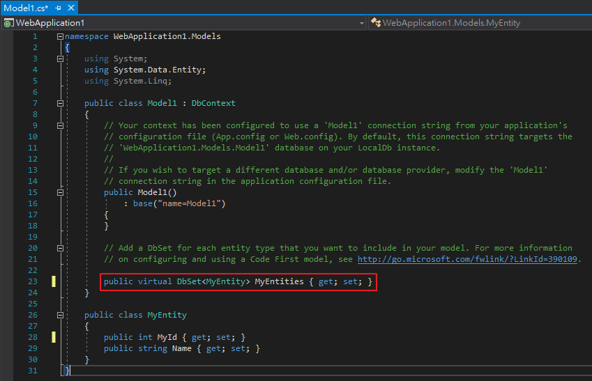
並設定資料庫初始化策略為每次執行專案時總是先Drop再Create資料庫
Database.SetInitializer(new DropCreateDatabaseAlways<Model1>());
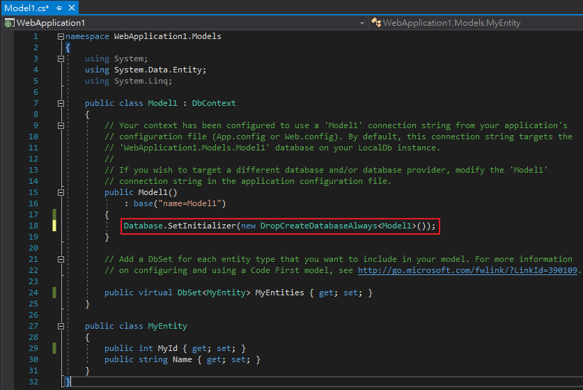
我直接使用Scaffolded來協助我快速創立Controller與View的測試內容，
特別注意，在使用Scaffolded之前必須先build專案一遍，否則會出錯
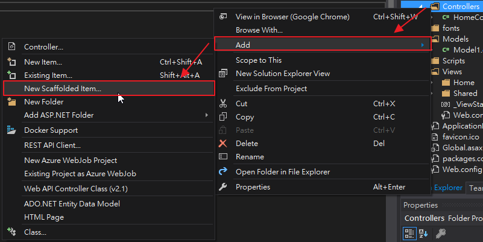
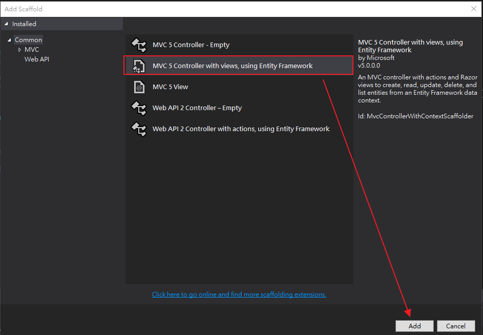
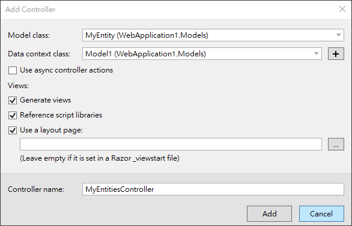
那為何專案也Build過一遍了，卻還是出錯呢？此錯非彼錯，
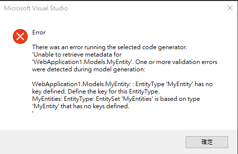
其錯誤訊息是指MyEntity class(相當於資料表名稱為MyEntity)沒有指定Primary Key，
所以一定要使用Key屬性來指定MyId名稱(相當於資料行名稱為MyId)為Primary Key，編譯才會過。
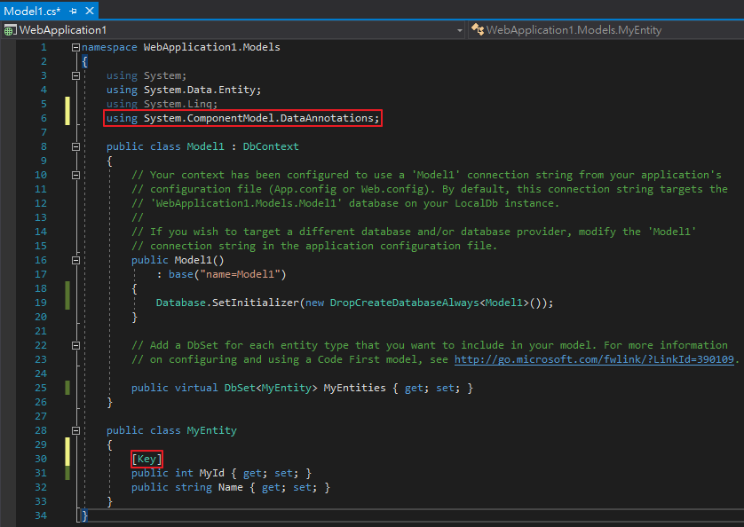
成功產生controller與view
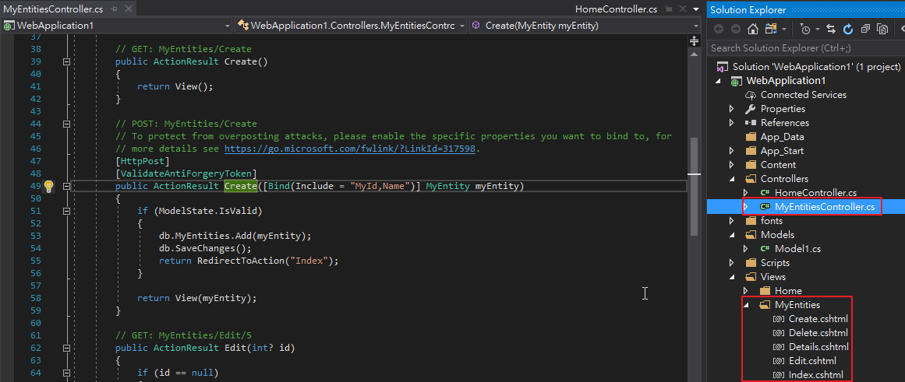
執行Create.cshtml頁面並輸入一筆資料看看
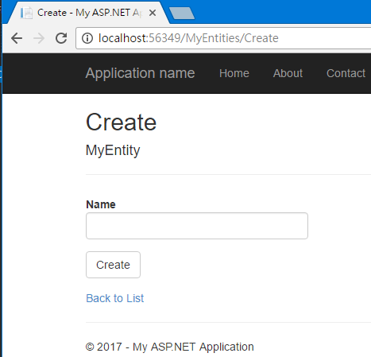
再來用SSMS到(LocalDb)\MSSQLLocalDB看看MyEntities資料表裡的結構，
發現並沒有對資料行(MyId)特別指定數值自動遞增(Identity)卻反而被設定了。
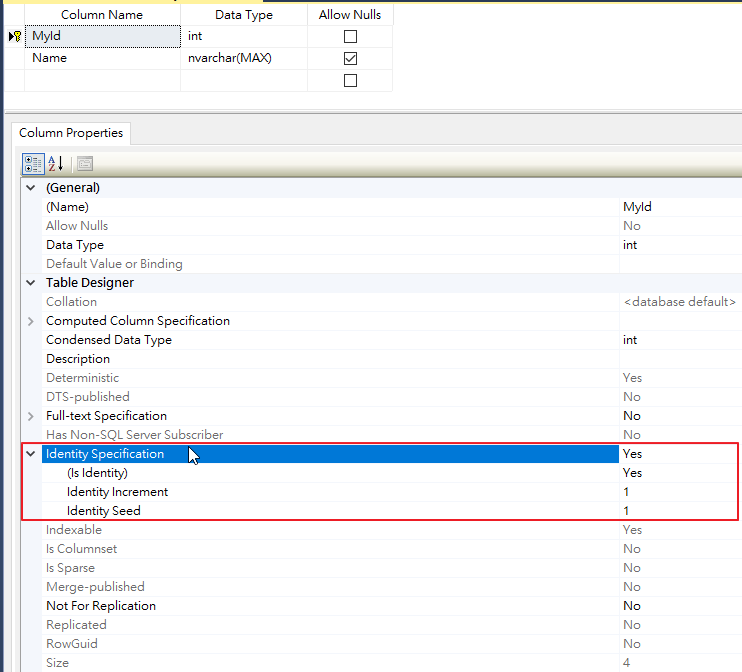
事後發現，原來設計POCO時Visual studio會看到「Id」字眼就自動將資料行名稱「Id」設定為Primary Key，
而為Primary Key的資料行之資料型態是int時，又會自動設定Identity。
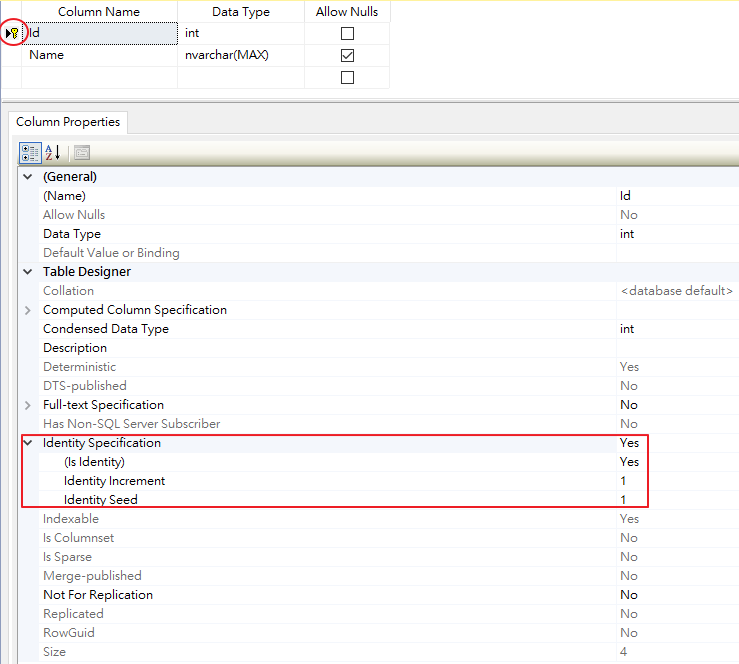
所以當不想被自動設定Identity時，則應該在MyId上面再添加
DatabaseGenerated(DatabaseGeneratedOption.None) 屬性。
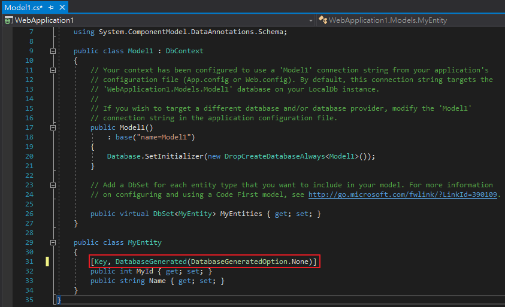
二、以下部份列出用於Code First的Metadata屬性有
1、Key
參考資料：